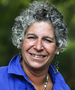

Danielle Aucoin
Hello, my name is Danielle Aucoin. I am a DEEC Preschool Certified Teacher and I am thrilled to join the 3’s classroom at Kids-A-Lot. I have a B.A. in Theatre Arts from Plymouth State University with an emphasis in Musical Theatre. While I am extremely
passionate about theatre, I am also passionate about working with children, which has led me to Kids-A-Lot where I can blend my two passions together. At the preschool age children naturally play make believe and create imaginative stories. They are
at the perfect age to explore the world of theatre. I am excited to teach the children self-expression, teamwork, and following directions, among many other things!
Emily Murphy
My name is Emily Murphy. I am a recent graduate from Keene State College and hold a degree in Psychology. I started working with children as early as 11 yrs. old when I was a mother’s helper and continued to work with children through my high school
and college years. I began my employment at Kids-A-Lot in 2010 during my college breaks and in the summer months. I was very happy to accept a full-time position at KAL in the Young Toddler room in September of 2014. I believe the saying “it takes
a village” is truer than you think. Every day that I gain more trust with a child and their family makes me feel like I am an extension of their family. I love watching them grow and hearing them giggle. I feel lucky to be a part of their development
and feel good about being a comforter and a nurturer when needed.
Melissa
McEntire-Baylis
Melissa has been working with children for 17 years. She is a DEEC certified lead preschool teacher, and holds a BS in Elementary Education and Psychology from Worcester State University. What she loves most about young children is that they have a
brilliant, honest, refreshing, and insatiable eagerness to learn. In her spare time, Melissa likes doing yoga, hiking, reading, and spending time with her daughter Megan.
Paul Nichols
Hello! My name is Paul Nichols and I am one of the Lead Teachers in the T-4’s classroom this school year! I was born and raised in Belmont, MA and recently graduated from Endicott College with a Bachelor’s degree in Elementary Education. I am Massachusetts
Teacher licensed from 1st-6th grade and hold a special education license for Pre-K to 8 as well. I am currently working on my Master Degree in Education. I learned that I loved working with children when I was 14 yrs. old when I started coaching basketball
and baseball teams in my hometown. One of my favorite things about working with children is seeing them apply a skill they learned about in the classroom to a new real world setting. Other than teaching children, I like to play all pick-up sports,
go to the gym, read, travel, and spend time with family and friends. Ultimately, I love working with all different age groups, and from this experience, I hope to give your child a fun, exciting, and eager experience into the world of education.
Maryann Deignan
Maryann opened Kids-a-Lot in September 1987 serving as both teacher and director. Her goal was to provide a warm, loving, and educational environment for young children. Maryann earned her Bachelor of Science degree from Bridgewater State College. She
has done graduate course work at Lesley College.
Maryann is a member of the NAEYC Association and BAEYC Association, Nashoba Community Partnership Council, Stow Business Association, and the National Federation of Independent Businesses. Maryann is on the Advisory Board of the Early Childhood program
at Minuteman Vocational Technical High School. She is also the Secretary of the Board of the Clover Foundation -- an organization created to help build a better future for the impoverished children of Uganda. Her teaching experience includes teaching
special needs children at St. Coletta School in Braintree, multiple handicapped students at the Protestant Guild for the Blind in Watertown, and nursery school students in Irvine, CA and Acton MA. Maryann is passionate about enriching the lives of
children.
She has been serving exclusively as Director since 1989, planning staff education workshops, children’s enrichment activities, accreditation, and facility improvements. Maryann is married and resides in Carlisle. Her husband, Chris, is responsible for
the construction improvements within Kids-A-Lot. She has four children ages 18-25 (James, Caroline, Connor, Hannah.) She enjoys reading, walking, traveling, skiing, and spending time with her family and friends. Maryann hopes to one day pen a children’s
book, filling it with anecdotes from her great experiences with children!
 Ginette Bowen
Ginette Bowen
Ginette has been working with children for 30 years! Ginette is DEEC Certified in Infant/Toddler and Preschool as well as Director II qualified. She loves working with children because they remind her of her own. She knows that every step she takes
with them helps them grow and develop. She feels fulfilled when working with children because she loves to share her experiences with them and to let them know that they are loved by someone everyday. She also continues going to school because she
wants to keep acquiring more knowledge about children. Ginette is a mother of seven children and a proud grandmother of four. On ginette’s free time she loves to dance, listen to country music, read, and cook!
 Stephani Roskey
Stephani Roskey
Stepfani earned her Associates Degree in Early Childhood Education from Quinsigamond College and is pursuing her Bachelors Degree at this time. Stepfani has been working with young children for three years. She loves to watch her students interact with
and explore the environment around them. Stepfani loves camping and hiking in the White Mountains with her family. Also, she has been on a curling team since she was twelve years old and has competed in bonspiels from northern New York and New Hampshire
all the way to Pennsylvania!
Meghan
Kreidermacher
Meghan joined the Kids-A-Lot staff in September 2013. She has come full circle as she is a former Kids-A-Lot student! Meghan attended Endicott College and has a degree in Hospitality. She has been working with children for over 12 years including 9
years within Nashoba Day Camp of Littleton where she worked with 3 and 4 year old children. She welcomes the challenge of experiences that each new day brings within the field. She feels her education and work experience combined will be a great support
for all children and families. Meghan has a love and passion for young children and is very positive in her approach to help children grow and develop to the best of their abilities. Welcome Meghan!
 Amanda Gallo
Amanda Gallo
Amanda has an Associates Degree in Science and is an Infant Toddler DEEC Certified teacher. She is currently taking college courses within the medical administration field. Amanda has been working with children for ten years, since the age of thirteen.
Amanda’s love and dedication for children all started from babysitting. The thing she loves most about working with children is watching them grow, and making them laugh and smile. She feels that the happiness of children brings out the best in people.
Amanda’s favorite season is summer when she likes to spend as much time outside as possible. She enjoys activities such as hiking, jet-skiing, 4-wheeling, boating, and spending a night out with friends by the fire.
Rebekah Parkman
My name is Rebekah Parkman. I received my college degree at Atlantic Union College in Early Childhood Education with a minor in Psychology. I have been a Behavior Therapist and Consultant for many families. In addition to in-home support counseling,
I also taught preschool, after school and summer programs for all ages. I am a single mom of two wonderful and talented girls, ages 11 and 16. I love working with young children beacause of the funniest words and statements they make. I like seeing
the academic, emotional, and social growth that each child goes through, and knowing that I had a small part in it. I believe that each child learns through play and observing one another. I very much enjoy learning the different cultures, values,
and beliefs that each family holds. In my free time I like to watch my kids play sports, play darts, and color madalas. I love photography and art, and I am a big sports fan. I look forward to working with the children, parents, and staff and I am
happy to become part of the family here at Kids-A-Lot.
Sharyn Borey
Sharyn has been working with young children for forty one years. Sharyn is Preschool Teacher DEEC Certified and before working at Kids-A-Lot (twenty four years ago,) Sharyn ran her own home daycare. When asked what she likes best about working with
young children, she replied, “Seeing their smiling faces and watching them have fun. They are all special in their own way.” She enjoys preparing projects and knowing the children are learning while having fun! In her free time, Sharyn enjoys spoiling
her grandchildren; Andrew, Jayla, Daniel, Samantha, and Jeremy!

Debra Bolduc
Debbi has over 25 years of experience working with children ages 4 to 18. She is excited about
being able to share her passions for the “natural” world, creative arts and science with pre-schoolers. She enjoys
the high energy level of young children as well as their never ending sense of curiosity and wonder as well as
their infectious laughter and smiles. Debbi holds a degree in Elementary Education and General Science. She has 16
years of teaching experience. Additionally she has worked at a number of summer camps acting as Camp Director,
Nature and Outdoor Specialist and Waterfront Director. She is a competitively trained swimmer and has taught
swimming and coached swim teams for over 20 years. She currently teaches swimming to special needs children and is
a Water Fitness Instructor. Debbi loves to travel, and has roamed all over the U.S., Europe, and Costa Rica. In her
free time she pursues outdoor activities such as canoeing, kayaking, and hiking. She is an avid photographer and a
Performing Arts enthusiast.
Ms. Alysa
Ms. Alysa loves working with small children. She appreciates their perspective on life and the
way they learn. She believes every child is unique and has something to contribute to the group as a whole. She
treats each child as an inventor and a teacher. She believes adults can learn from children as much as they can
learn from us. She loves teaching outside when possible while cultivatingan interest in independent discovery. She
has had experience in diverse settings since she began working with children in 1996. She recieved her Associate's
Degree from Post University in Connecticut in January of 2017.